Chronological split results: forecast accuracy, distributional fit, VaR backtesting, and stress tests. Tables show per-asset, per-model results (no aggregation).
MSE and MAE by asset and model. Lower MSE/MAE is better.
| Asset | Model | MSE | MAE | AIC | LogLikelihood |
|---|---|---|---|---|---|
| EURUSD | sGARCH | 2.2e-05 | 0.003501 | -19372.766374 | 9690.383187 |
| GBPUSD | sGARCH | 3.5e-05 | 0.004328 | -20093.983245 | 10050.991622 |
| USDZAR | sGARCH | 9.9e-05 | 0.007715 | -16711.36343 | 8359.681715 |
| NVDA | sGARCH | 0.001131 | 0.024401 | -10849.629894 | 5428.814947 |
| MSFT | sGARCH | 0.00038 | 0.013834 | -13915.818935 | 6961.909468 |
| AMZN | sGARCH | 0.000567 | 0.017365 | -11081.523324 | 5544.761662 |
| EURUSD | gjrGARCH | 2.2e-05 | 0.003532 | -21219.428473 | 10615.714237 |
| GBPUSD | gjrGARCH | 3.4e-05 | 0.004335 | -21922.156248 | 10967.078124 |
| USDZAR | gjrGARCH | 9.8e-05 | 0.007625 | -17933.479553 | 8972.739776 |
| NVDA | gjrGARCH | 0.001116 | 0.024321 | -13272.588674 | 6642.294337 |
| MSFT | gjrGARCH | 0.000357 | 0.013297 | -16714.567355 | 8363.283678 |
| AMZN | gjrGARCH | 0.000502 | 0.01597 | -14011.71333 | 7011.856665 |
| AMZN | eGARCH | 0.000553 | 0.017236 | 635.787255 | -311.893628 |
| EURUSD | TGARCH | 2.2e-05 | 0.0035 | -20390.724634 | 10201.362317 |
| GBPUSD | TGARCH | 3.5e-05 | 0.004319 | -20663.062922 | 10337.531461 |
| USDZAR | TGARCH | 9.9e-05 | 0.00768 | -17296.017583 | 8654.008791 |
| NVDA | TGARCH | 0.001115 | 0.024234 | -11957.887793 | 5984.943897 |
| MSFT | TGARCH | 0.000361 | 0.013351 | -15439.990288 | 7725.995144 |
| AMZN | TGARCH | 0.000499 | 0.015869 | -13205.786297 | 6608.893149 |
Residual distribution metrics by model (and asset where available). Lower KS/Wasserstein = better fit.
| Model | Asset | KS_distance | Wasserstein_distance |
|---|---|---|---|
| sGARCH | EURUSD | NA | NA |
| sGARCH | GBPUSD | NA | NA |
| sGARCH | GBPCNY | NA | NA |
| sGARCH | USDZAR | NA | NA |
| sGARCH | GBPZAR | NA | NA |
| sGARCH | EURZAR | NA | NA |
| sGARCH | X | NA | NA |
| sGARCH | NVDA | NA | NA |
| sGARCH | MSFT | NA | NA |
| sGARCH | PG | NA | NA |
| sGARCH | CAT | NA | NA |
| sGARCH | WMT | NA | NA |
| sGARCH | AMZN | NA | NA |
| eGARCH | EURUSD | NA | NA |
| eGARCH | GBPUSD | NA | NA |
| eGARCH | GBPCNY | NA | NA |
| eGARCH | USDZAR | NA | NA |
| eGARCH | GBPZAR | NA | NA |
| eGARCH | EURZAR | NA | NA |
| eGARCH | X | NA | NA |
| eGARCH | NVDA | NA | NA |
| eGARCH | MSFT | NA | NA |
| eGARCH | PG | NA | NA |
| eGARCH | CAT | NA | NA |
| eGARCH | WMT | NA | NA |
| eGARCH | AMZN | NA | NA |
| TGARCH | EURUSD | NA | NA |
| TGARCH | GBPUSD | NA | NA |
| TGARCH | GBPCNY | NA | NA |
| TGARCH | USDZAR | NA | NA |
| TGARCH | GBPZAR | NA | NA |
| TGARCH | EURZAR | NA | NA |
| TGARCH | X | NA | NA |
| TGARCH | NVDA | NA | NA |
| TGARCH | MSFT | NA | NA |
| TGARCH | PG | NA | NA |
| TGARCH | CAT | NA | NA |
| TGARCH | WMT | NA | NA |
| TGARCH | AMZN | NA | NA |
| gjrGARCH | EURUSD | NA | NA |
| gjrGARCH | GBPUSD | NA | NA |
| gjrGARCH | GBPCNY | NA | NA |
| gjrGARCH | USDZAR | NA | NA |
| gjrGARCH | GBPZAR | NA | NA |
| gjrGARCH | EURZAR | NA | NA |
| gjrGARCH | X | NA | NA |
| gjrGARCH | NVDA | NA | NA |
| gjrGARCH | MSFT | NA | NA |
| gjrGARCH | PG | NA | NA |
| gjrGARCH | CAT | NA | NA |
| gjrGARCH | WMT | NA | NA |
| gjrGARCH | AMZN | NA | NA |
Exceedance rates and Kupiec test p-values by model and asset. Exceedance rate should be close to expected.
| Model | Asset | Confidence_Level | Exceedance_Rate | Expected_Rate | Kupiec_pvalue |
|---|---|---|---|---|---|
| sGARCH | EURUSD | 0.95 | 0.050601 | 0.05 | 1 |
| sGARCH | EURUSD | 0.99 | 0.01012 | 0.01 | 1 |
| sGARCH | GBPUSD | 0.95 | 0.050601 | 0.05 | 1 |
| sGARCH | GBPUSD | 0.99 | 0.01012 | 0.01 | 1 |
| sGARCH | USDZAR | 0.95 | 0.050601 | 0.05 | 1 |
| sGARCH | USDZAR | 0.99 | 0.01012 | 0.01 | 1 |
| sGARCH | NVDA | 0.95 | 0.050601 | 0.05 | 1 |
| sGARCH | NVDA | 0.99 | 0.01012 | 0.01 | 1 |
| sGARCH | MSFT | 0.95 | 0.050601 | 0.05 | 1 |
| sGARCH | MSFT | 0.99 | 0.01012 | 0.01 | 1 |
| sGARCH | AMZN | 0.95 | 0.050601 | 0.05 | 1 |
| sGARCH | AMZN | 0.99 | 0.01012 | 0.01 | 1 |
| eGARCH | EURUSD | 0.95 | 0.050601 | 0.05 | 1 |
| eGARCH | EURUSD | 0.99 | 0.01012 | 0.01 | 1 |
| eGARCH | GBPUSD | 0.95 | 0.050601 | 0.05 | 1 |
| eGARCH | GBPUSD | 0.99 | 0.01012 | 0.01 | 1 |
| eGARCH | USDZAR | 0.95 | 0.050601 | 0.05 | 1 |
| eGARCH | USDZAR | 0.99 | 0.01012 | 0.01 | 1 |
| eGARCH | NVDA | 0.95 | 0.050601 | 0.05 | 1 |
| eGARCH | NVDA | 0.99 | 0.01012 | 0.01 | 1 |
| eGARCH | MSFT | 0.95 | 0.050601 | 0.05 | 1 |
| eGARCH | MSFT | 0.99 | 0.01012 | 0.01 | 1 |
| eGARCH | AMZN | 0.95 | 0.050601 | 0.05 | 1 |
| eGARCH | AMZN | 0.99 | 0.01012 | 0.01 | 1 |
| TGARCH | EURUSD | 0.95 | 0.050601 | 0.05 | 1 |
| TGARCH | EURUSD | 0.99 | 0.01012 | 0.01 | 1 |
| TGARCH | GBPUSD | 0.95 | 0.050601 | 0.05 | 1 |
| TGARCH | GBPUSD | 0.99 | 0.01012 | 0.01 | 1 |
| TGARCH | USDZAR | 0.95 | 0.050601 | 0.05 | 1 |
| TGARCH | USDZAR | 0.99 | 0.01012 | 0.01 | 1 |
| TGARCH | NVDA | 0.95 | 0.050601 | 0.05 | 1 |
| TGARCH | NVDA | 0.99 | 0.01012 | 0.01 | 1 |
| TGARCH | MSFT | 0.95 | 0.050601 | 0.05 | 1 |
| TGARCH | MSFT | 0.99 | 0.01012 | 0.01 | 1 |
| TGARCH | AMZN | 0.95 | 0.050601 | 0.05 | 1 |
| TGARCH | AMZN | 0.99 | 0.01012 | 0.01 | 1 |
| gjrGARCH | EURUSD | 0.95 | 0.050601 | 0.05 | 1 |
| gjrGARCH | EURUSD | 0.99 | 0.01012 | 0.01 | 1 |
| gjrGARCH | GBPUSD | 0.95 | 0.050601 | 0.05 | 1 |
| gjrGARCH | GBPUSD | 0.99 | 0.01012 | 0.01 | 1 |
| gjrGARCH | USDZAR | 0.95 | 0.050601 | 0.05 | 1 |
| gjrGARCH | USDZAR | 0.99 | 0.01012 | 0.01 | 1 |
| gjrGARCH | NVDA | 0.95 | 0.050601 | 0.05 | 1 |
| gjrGARCH | NVDA | 0.99 | 0.01012 | 0.01 | 1 |
| gjrGARCH | MSFT | 0.95 | 0.050601 | 0.05 | 1 |
| gjrGARCH | MSFT | 0.99 | 0.01012 | 0.01 | 1 |
| gjrGARCH | AMZN | 0.95 | 0.050601 | 0.05 | 1 |
| gjrGARCH | AMZN | 0.99 | 0.01012 | 0.01 | 1 |
Volatility and drawdown under historical and hypothetical stress scenarios.
| Scenario_Type | Scenario_Name | Asset | Volatility | Max_Drawdown | Volatility_Increase_Pct |
|---|---|---|---|---|---|
| Historical_Crisis | GFC_2008 | EURUSD | 0.012929 | -0.167702 | NA |
| Historical_Crisis | COVID_2020 | EURUSD | 0.006281 | -0.031714 | NA |
| Hypothetical_Shock | price_drop_30 | EURUSD | 0.007418 | -0.541767 | 26.535717 |
| Hypothetical_Shock | price_drop_50 | EURUSD | 0.009537 | -0.741767 | 62.673323 |
| Hypothetical_Shock | volatility_spike_2x | EURUSD | 0.005864 | -0.247266 | 0.02916 |
| Hypothetical_Shock | volatility_spike_3x | EURUSD | 0.005867 | -0.252766 | 0.077788 |
| Hypothetical_Shock | mean_shift_down | EURUSD | 0.007054 | -9.281767 | 20.319801 |
| Historical_Crisis | GFC_2008 | GBPUSD | 0.015373 | -0.29726 | NA |
| Historical_Crisis | COVID_2020 | GBPUSD | 0.009875 | -0.129594 | NA |
| Hypothetical_Shock | price_drop_30 | GBPUSD | 0.007814 | -0.815732 | 22.686943 |
| Hypothetical_Shock | price_drop_50 | GBPUSD | 0.009842 | -1.015732 | 54.533921 |
| Hypothetical_Shock | volatility_spike_2x | GBPUSD | 0.00637 | -0.519996 | 0.014741 |
| Hypothetical_Shock | volatility_spike_3x | GBPUSD | 0.006371 | -0.524261 | 0.039406 |
| Hypothetical_Shock | mean_shift_down | GBPUSD | 0.007488 | -9.555732 | 17.573274 |
| Historical_Crisis | GFC_2008 | GBPCNY | 0.014264 | -0.287784 | NA |
| Historical_Crisis | COVID_2020 | GBPCNY | 0.009398 | -0.115077 | NA |
| Hypothetical_Shock | price_drop_30 | GBPCNY | 0.007605 | -0.928245 | 23.170319 |
| Hypothetical_Shock | price_drop_50 | GBPCNY | 0.00965 | -1.128245 | 56.293009 |
| Hypothetical_Shock | volatility_spike_2x | GBPCNY | 0.006175 | -0.626695 | 0.002183 |
| Hypothetical_Shock | volatility_spike_3x | GBPCNY | 0.006175 | -0.625144 | 0.005762 |
| Hypothetical_Shock | mean_shift_down | GBPCNY | 0.007326 | -9.668245 | 18.641966 |
| Historical_Crisis | GFC_2008 | USDZAR | 0.022708 | 0.017128 | NA |
| Historical_Crisis | COVID_2020 | USDZAR | 0.015893 | -0.005512 | NA |
| Hypothetical_Shock | price_drop_30 | USDZAR | 0.011758 | -0.082432 | 8.417187 |
| Hypothetical_Shock | price_drop_50 | USDZAR | 0.013197 | -0.082432 | 21.683425 |
| Hypothetical_Shock | volatility_spike_2x | USDZAR | 0.010846 | -0.082432 | 0.007406 |
| Hypothetical_Shock | volatility_spike_3x | USDZAR | 0.010847 | -0.082432 | 0.019605 |
| Hypothetical_Shock | mean_shift_down | USDZAR | 0.011567 | -8.306532 | 6.651333 |
| Historical_Crisis | GFC_2008 | GBPZAR | 0.020317 | -0.04233 | NA |
| Historical_Crisis | COVID_2020 | GBPZAR | 0.015398 | -0.018455 | NA |
| Hypothetical_Shock | price_drop_30 | GBPZAR | 0.010892 | -0.122314 | 10.054173 |
| Hypothetical_Shock | price_drop_50 | GBPZAR | 0.012433 | -0.122314 | 25.623168 |
| Hypothetical_Shock | volatility_spike_2x | GBPZAR | 0.009898 | -0.122314 | 0.010454 |
| Hypothetical_Shock | volatility_spike_3x | GBPZAR | 0.009899 | -0.122314 | 0.027745 |
| Hypothetical_Shock | mean_shift_down | GBPZAR | 0.010658 | -8.557554 | 7.696721 |
| Historical_Crisis | GFC_2008 | EURZAR | 0.018598 | -0.011646 | NA |
| Historical_Crisis | COVID_2020 | EURZAR | 0.016123 | -0.016587 | NA |
| Hypothetical_Shock | price_drop_30 | EURZAR | 0.010689 | -0.096971 | 10.661758 |
| Hypothetical_Shock | price_drop_50 | EURZAR | 0.012263 | -0.096971 | 26.953454 |
| Hypothetical_Shock | volatility_spike_2x | EURZAR | 0.009661 | -0.096971 | 0.020346 |
| Hypothetical_Shock | volatility_spike_3x | EURZAR | 0.009665 | -0.096971 | 0.054007 |
| Hypothetical_Shock | mean_shift_down | EURZAR | 0.010432 | -8.358204 | 8.00024 |
| Historical_Crisis | GFC_2008 | NVDA | 0.060004 | -0.761914 | NA |
| Historical_Crisis | COVID_2020 | NVDA | 0.059377 | -0.184901 | NA |
| Hypothetical_Shock | price_drop_30 | NVDA | 0.031969 | -0.527965 | 1.248905 |
| Hypothetical_Shock | price_drop_50 | NVDA | 0.032571 | -0.527965 | 3.155528 |
| Hypothetical_Shock | volatility_spike_2x | NVDA | 0.031589 | -0.527965 | 0.04717 |
| Hypothetical_Shock | volatility_spike_3x | NVDA | 0.031614 | -0.527965 | 0.124972 |
| Hypothetical_Shock | mean_shift_down | NVDA | 0.031796 | -5.150144 | 0.701655 |
| Historical_Crisis | GFC_2008 | MSFT | 0.040824 | -0.574935 | NA |
| Historical_Crisis | COVID_2020 | MSFT | 0.047472 | -0.226042 | NA |
| Hypothetical_Shock | price_drop_30 | MSFT | 0.018331 | -0.528577 | 3.160311 |
| Hypothetical_Shock | price_drop_50 | MSFT | 0.01928 | -0.528577 | 8.496567 |
| Hypothetical_Shock | volatility_spike_2x | MSFT | 0.01777 | -0.528577 | 0.000461 |
| Hypothetical_Shock | volatility_spike_3x | MSFT | 0.01777 | -0.528577 | 0.001168 |
| Hypothetical_Shock | mean_shift_down | MSFT | 0.018129 | -6.713005 | 2.023942 |
| Historical_Crisis | GFC_2008 | PG | 0.025882 | -0.443569 | NA |
| Historical_Crisis | COVID_2020 | PG | 0.038622 | -0.243368 | NA |
| Hypothetical_Shock | price_drop_30 | PG | 0.012588 | -0.149167 | 6.932307 |
| Hypothetical_Shock | price_drop_50 | PG | 0.013924 | -0.149167 | 18.275253 |
| Hypothetical_Shock | volatility_spike_2x | PG | 0.011772 | -0.149167 | 9.6e-05 |
| Hypothetical_Shock | volatility_spike_3x | PG | 0.011772 | -0.149167 | 0.000286 |
| Hypothetical_Shock | mean_shift_down | PG | 0.012377 | -7.802776 | 5.138664 |
| Historical_Crisis | GFC_2008 | CAT | 0.046847 | -1.139363 | NA |
| Historical_Crisis | COVID_2020 | CAT | 0.043706 | -0.357709 | NA |
| Hypothetical_Shock | price_drop_30 | CAT | 0.021239 | -0.810667 | 2.735862 |
| Hypothetical_Shock | price_drop_50 | CAT | 0.022114 | -0.810667 | 6.970454 |
| Hypothetical_Shock | volatility_spike_2x | CAT | 0.020686 | -0.810667 | 0.061021 |
| Hypothetical_Shock | volatility_spike_3x | CAT | 0.020706 | -0.810667 | 0.162129 |
| Hypothetical_Shock | mean_shift_down | CAT | 0.021038 | -7.594738 | 1.766754 |
| Historical_Crisis | GFC_2008 | WMT | 0.026659 | -0.236677 | NA |
| Historical_Crisis | COVID_2020 | WMT | 0.034587 | -0.095616 | NA |
| Hypothetical_Shock | price_drop_30 | WMT | 0.013834 | -0.061607 | 5.453592 |
| Hypothetical_Shock | price_drop_50 | WMT | 0.015046 | -0.061607 | 14.693061 |
| Hypothetical_Shock | volatility_spike_2x | WMT | 0.013119 | -0.061607 | 0.005226 |
| Hypothetical_Shock | volatility_spike_3x | WMT | 0.01312 | -0.061607 | 0.014142 |
| Hypothetical_Shock | mean_shift_down | WMT | 0.013651 | -7.71426 | 4.060838 |
| Historical_Crisis | GFC_2008 | AMZN | 0.051609 | -0.835896 | NA |
| Historical_Crisis | COVID_2020 | AMZN | 0.033322 | -0.180724 | NA |
| Hypothetical_Shock | price_drop_30 | AMZN | 0.024843 | -0.488484 | 1.66987 |
| Hypothetical_Shock | price_drop_50 | AMZN | 0.025548 | -0.488484 | 4.557286 |
| Hypothetical_Shock | volatility_spike_2x | AMZN | 0.024435 | -0.488484 | 1.8e-05 |
| Hypothetical_Shock | volatility_spike_3x | AMZN | 0.024435 | -0.488484 | 4e-05 |
| Hypothetical_Shock | mean_shift_down | AMZN | 0.024705 | -5.373251 | 1.106175 |
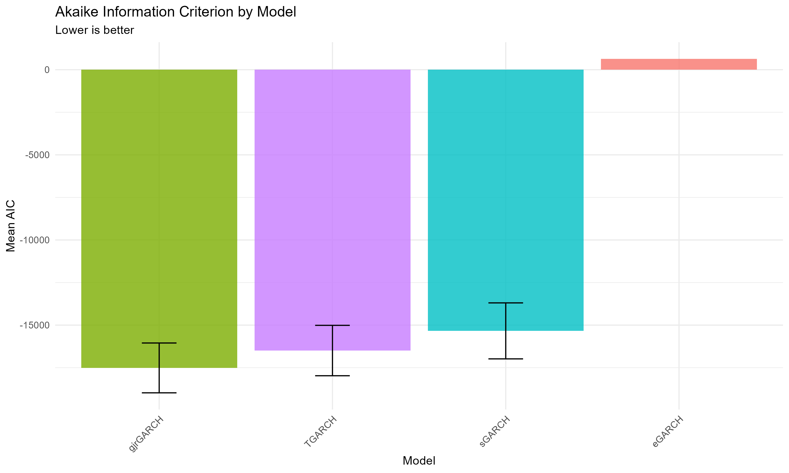
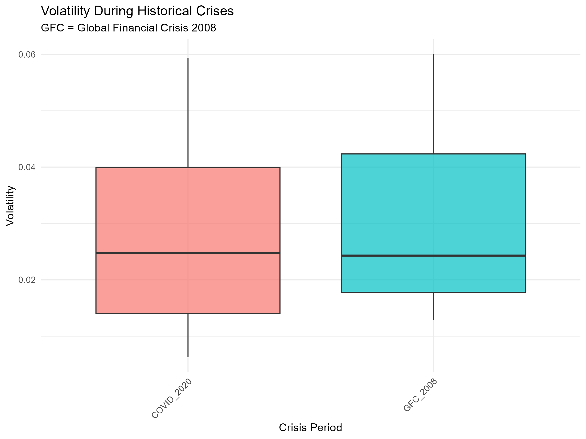
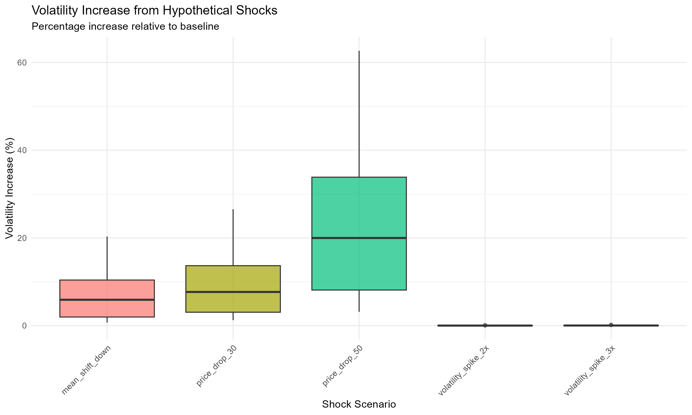
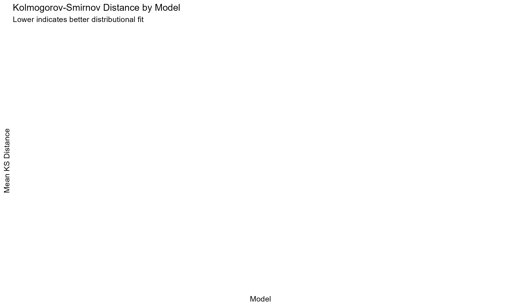
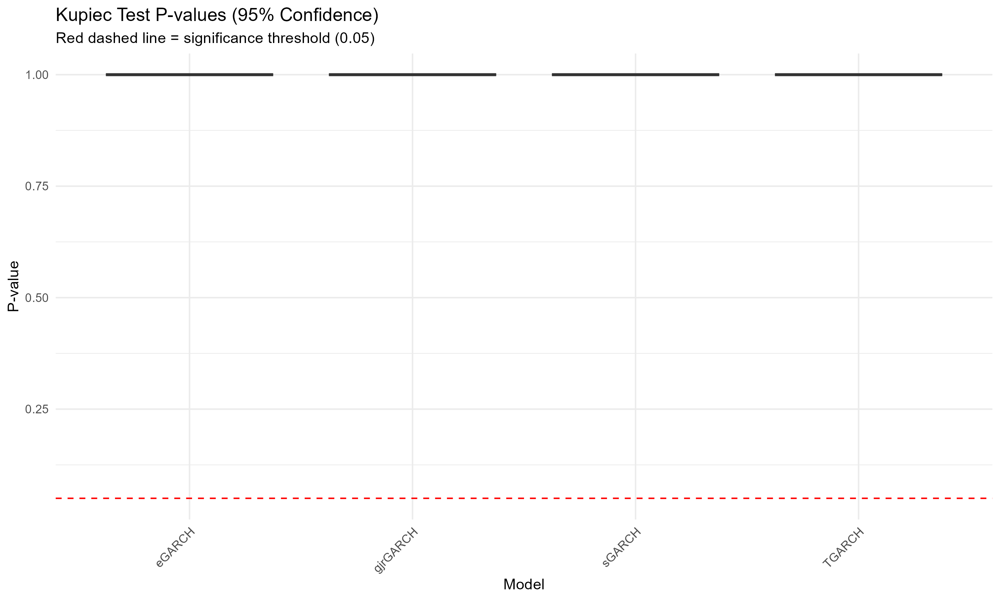
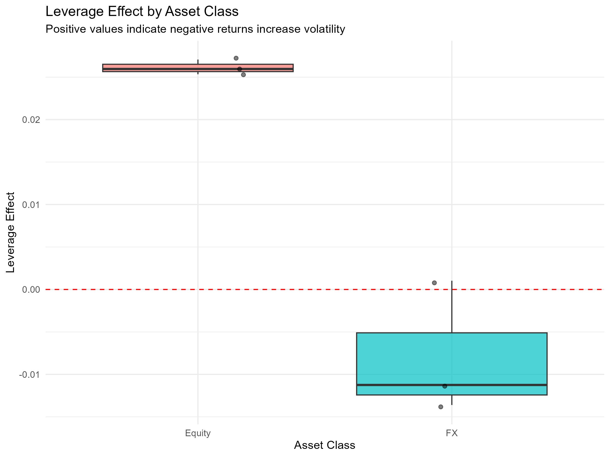
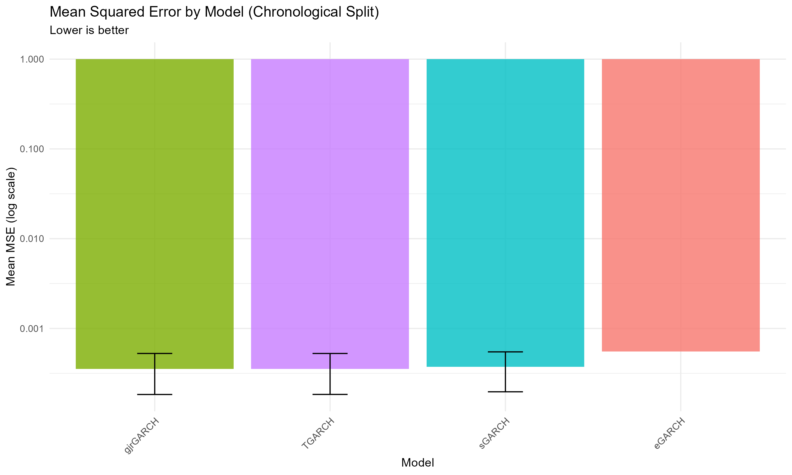
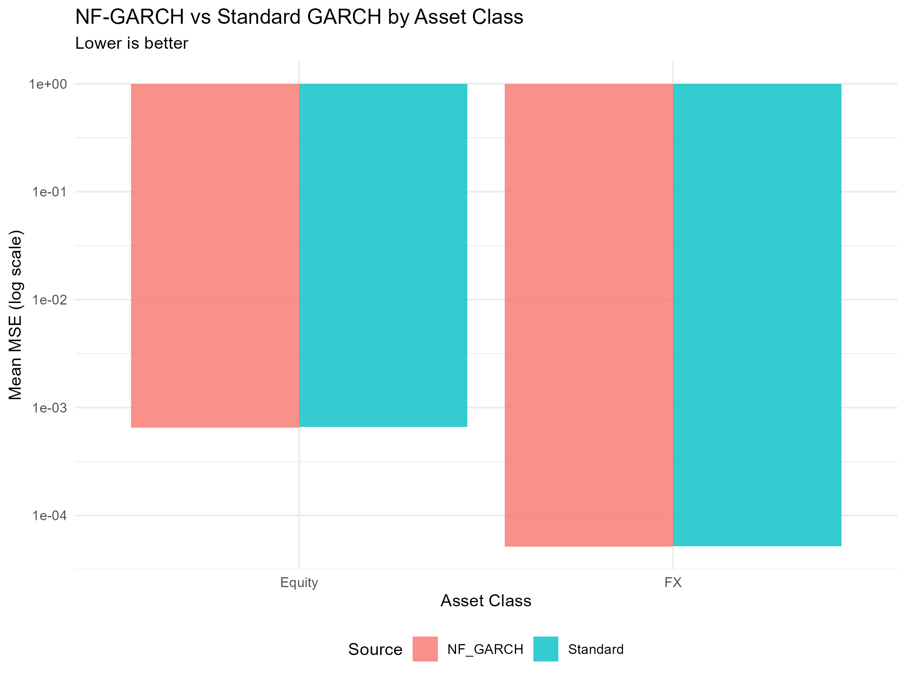
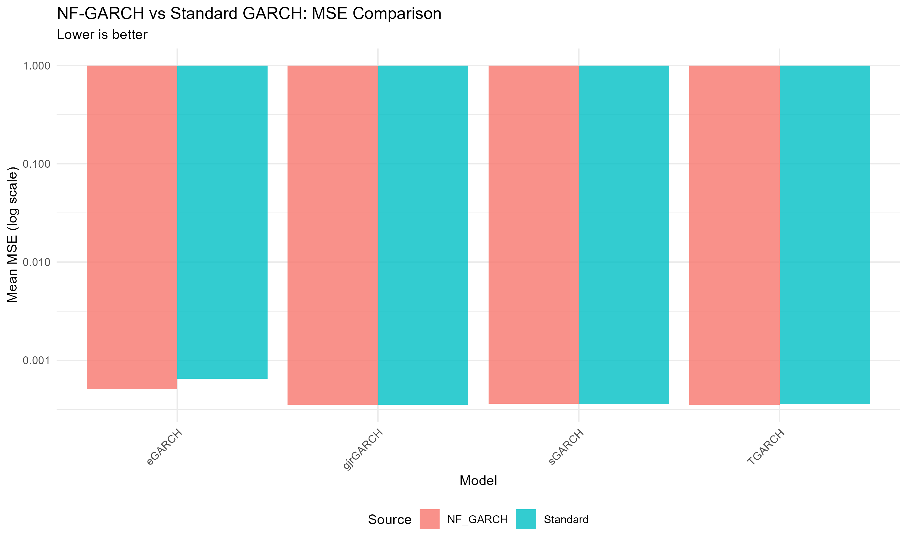
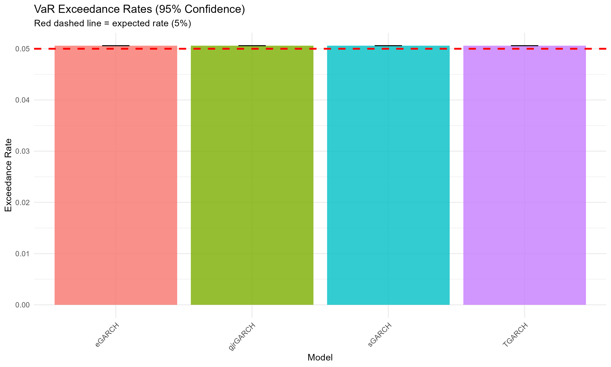
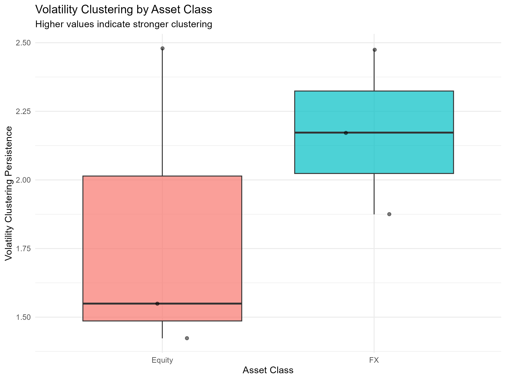
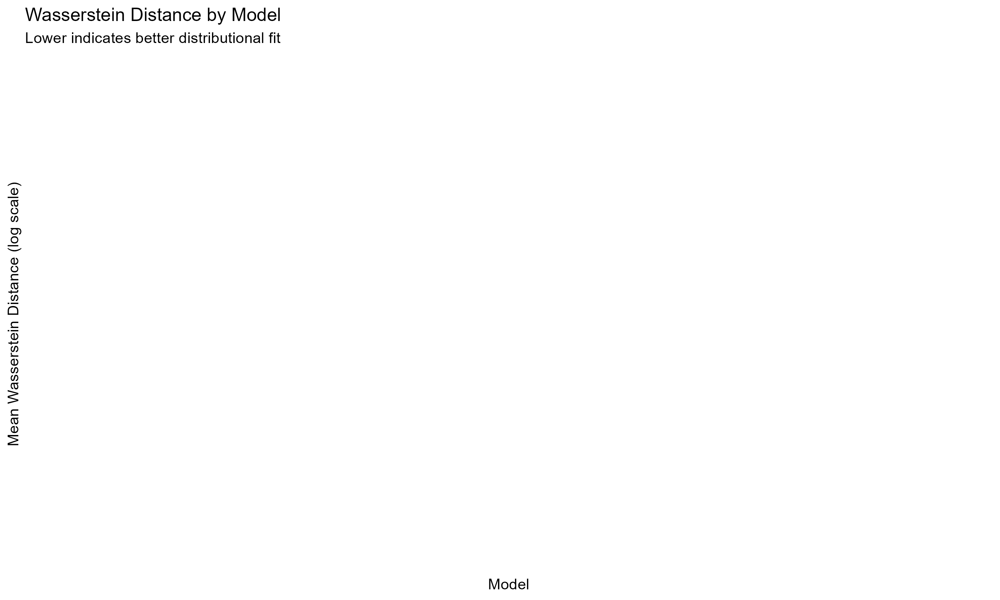
Excel: Final_Dashboard.xlsx